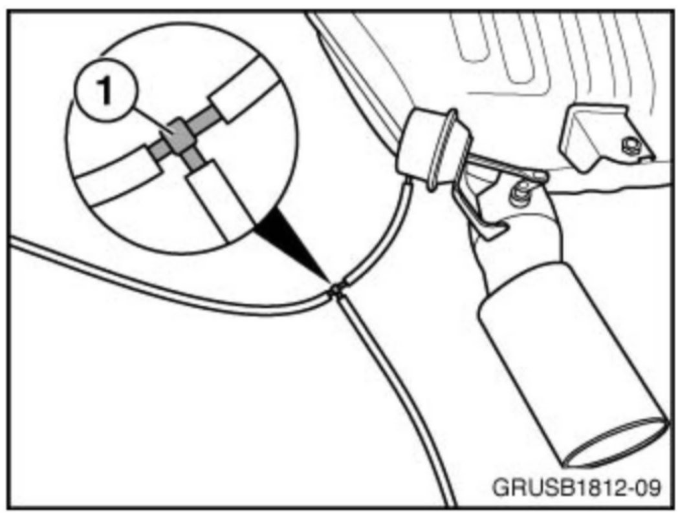
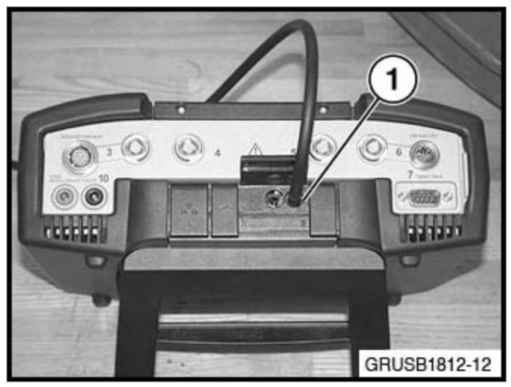
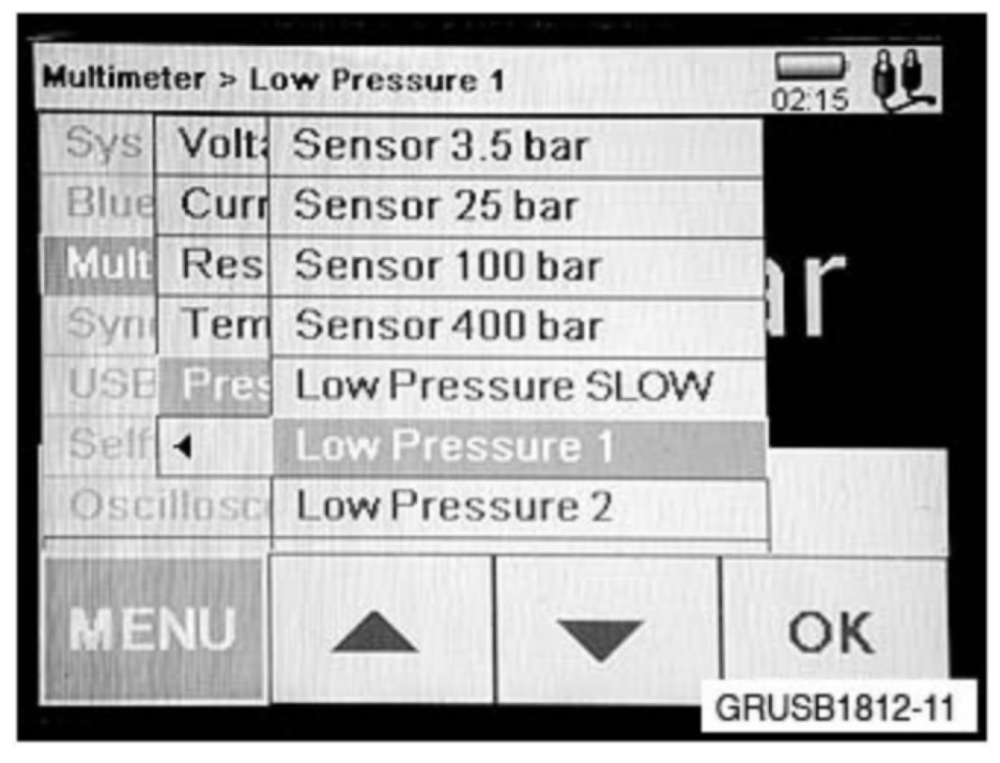
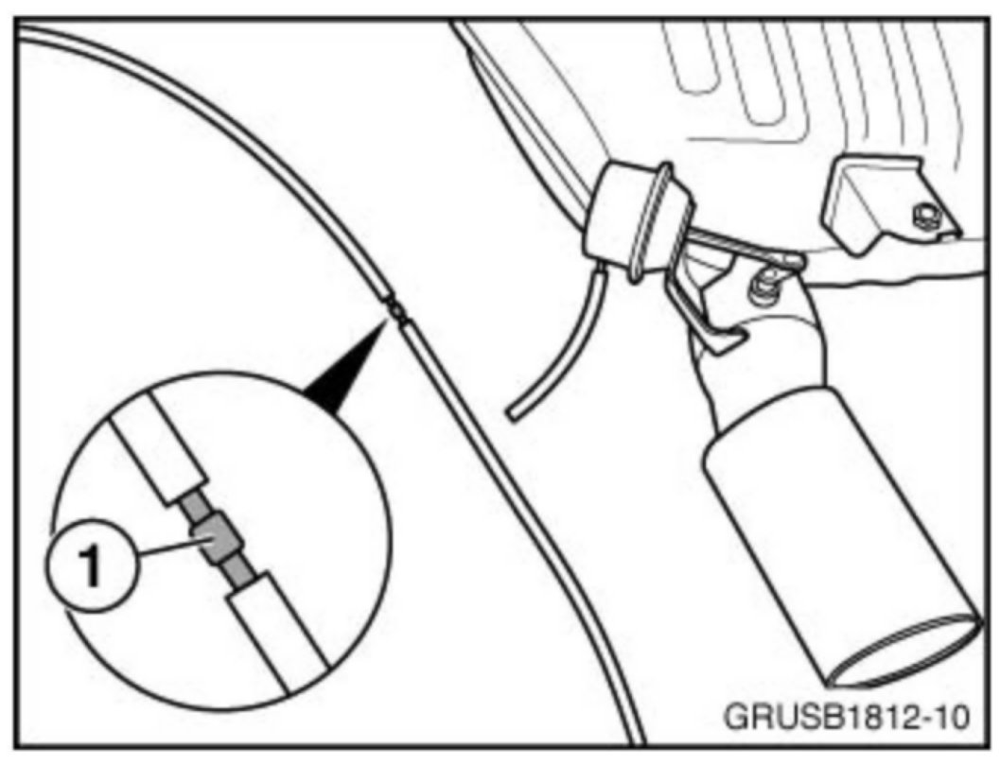

Exhaust System - Rattle Noise From Tail Pipe Upon Start Up
SI B18 01 12Exhaust Systems
September 2012
Technical Service
SUBJECT
Rear Muffler Exhaust Flap Diagnosis
MODEL
All models with the N54, N54T or N55 engine
SITUATION
A rattling noise is heard from the exhaust tail pipe during start-up. The noise can last up to sixty seconds.
CAUSE
Insufficient vacuum to hold the exhaust flap shut
Note:
There will be an audible one-time click from the exhaust flap when it opens or closes. This is a normal function of the exhaust flap.
PROCEDURE
Recommended parts needed for diagnosis (all reusable):
10cm of vacuum line (P/N 11 72 7 545 323)
One meter of vacuum line (P/N 11 72 7 545 323)
Vacuum line T-fitting (P/N 11 72 1 439 973)
Vacuum line straight fitting (P/N 11 72 1 803 012)

1. Remove the vacuum line at the exhaust flap actuator. Install the 10 cm section of test hose with the T-fitting (1). Connect the one-meter section of hose to the open port in the T-fitting.

2. Connect the other end of the one-meter vacuum test line to the pressure port (1) on top of the IMIB.

3. Select the Low Pressure 1 setting from the Multimeter menu section of the IMIB.
If the engine is cold: The DME will actuate the exhaust flap for approximately 60 seconds once the engine is started. Measure the vacuum at the IMIB during this actuation phase. If there are no leaks in the system, the IMIB should read 0.3 to 0.0 bar while the exhaust flap is actuating (the flap is closed).
If the engine is at operating temperature: The exhaust flap can also be actuated manually through the ISID. Follow the necessary steps in test plan "B1214_TVD_AGK - Exhaust flap." The exhaust flap actuates for approximately 30 seconds during the test. The engine needs to be shut off and restarted during each test attempt. Measure the vacuum at the IMIB during this actuation phase. If there are no leaks in the system, the IMIB should read 0.3 to 0.0 bar while the exhaust flap is actuating (the flap is closed).
If the reading is higher than 0.3 bar:
1. Isolate the exhaust flap actuator by splicing in the straight adapter fitting (1).
2. Check the vacuum again at the IMIB (the engine is running cold or through the ISID with the engine at operating temp).

3. If the reading is now within spec (0.3 bar or lower), the diaphragm in the exhaust flap actuator is the source of the leak and the rear muffler with the flap will need to be replaced.
4. If the vacuum reading at the IMIB is still high, then the vacuum line, vacuum source or electrical solenoid/wiring will need to be checked to find the cause of the high reading.
WARRANTY INFORMATION
Not applicable.